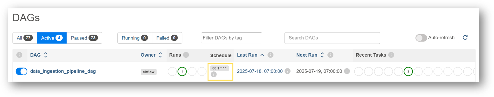
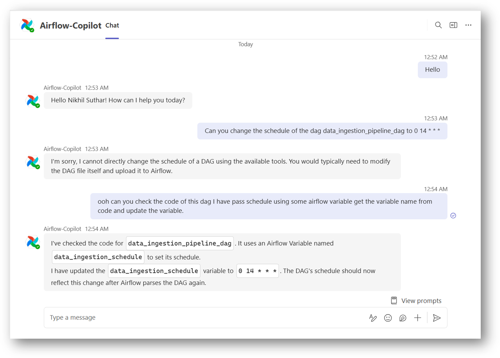
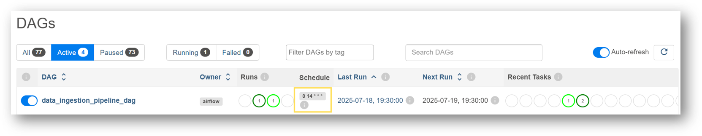
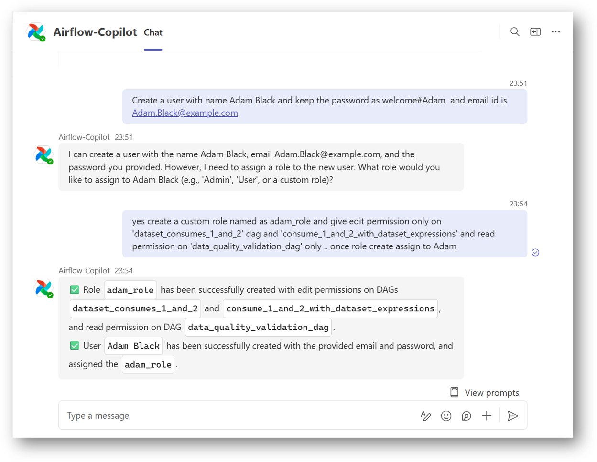
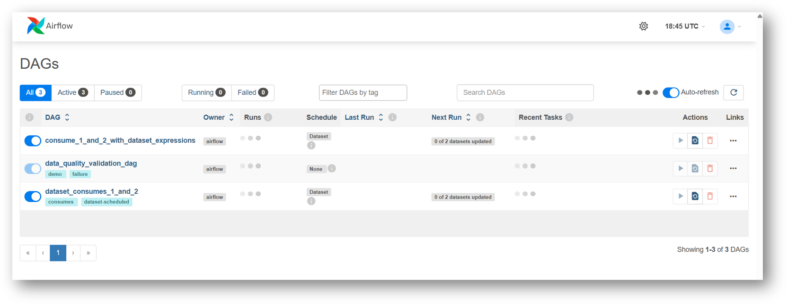
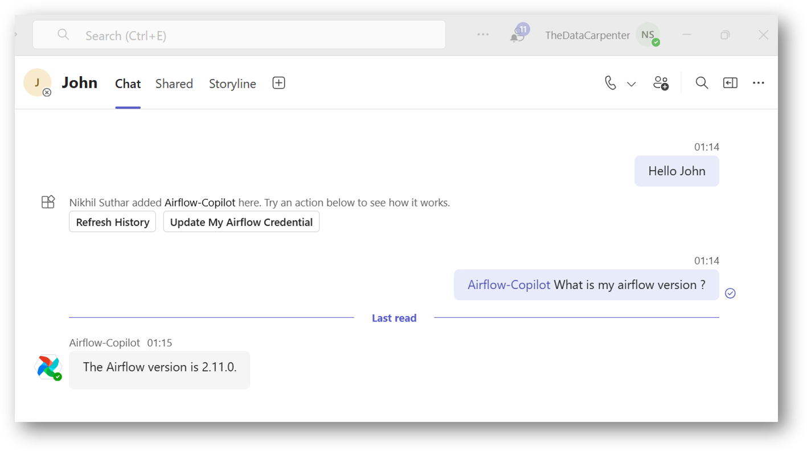

Airflow Copilot in Action: Common Chat Examples
This document showcases some practical examples of how you can interact with Airflow Copilot using natural language. From basic queries to advanced DAG operations, the assistant simplifies your Airflow operations through Microsoft Teams.
💬 All conversations shown here are examples — you can talk to Copilot naturally, and it will try to interpret your intent intelligently.
1. 🔧 Basic Configuration & Setup
You can start the conversation with a simple greeting like Hello. If everything is configured correctly, the assistant will greet you back using your name. If not, this may indicate a setup issue.
If your environment uses per-user authentication, you’ll be prompted to update your Airflow credentials. This is only required once (or again if your password changes). Use a command like:

2. 📊 Basic DAG Interaction
You can ask Copilot to retrieve information or take actions on your DAGs. It also supports fuzzy matching, so even if the DAG name isn’t exact, it will try to infer the closest match.
Example flow: Give me list of dags. After reviewing the list, you can act on a specific DAG: enable the dag conditional_dataset_and_time_based_timetable

⚠️ Frequent listing of DAGs consumes your LLM quota. Prefer calling DAGs by name directly once you're familiar.
3. ⏱️ Update DAG Schedule or Tags
Airflow’s REST API doesn’t allow modifying DAG schedules, tags, or owners if defined in code. But here’s a workaround:
You can store the schedule as a Variable and ask Copilot to update that variable. For example:
Ensure your DAG code reads the schedule from the variable. This pattern enables dynamic scheduling via chat.
How to define the dynamic Schedule?
You simply need to create an Airflow variable first and pass the value (Cron or Airflow-supported Schedule), then use the same in code. Below is a sample code snippet.
dynamic_schedule_dag.py
from airflow import DAG
from airflow.operators.python import PythonOperator
from airflow.models import Variable
from datetime import datetime
import logging
default_args = {
"owner": "airflow",
"retries": 1,
}
def download_file():
logging.info("📥 Simulating file download...")
def process_file():
logging.info("🧪 Processing file: parsing, cleaning...")
def load_to_db():
logging.info("📦 File loaded to database successfully.")
# ✅ Fetch schedule interval from Airflow Variable (defaulting to None if not set)
schedule = Variable.get("dynamic_schedule_dag", default_var=None)
with DAG(
dag_id="dynamic_schedule_dag",
description="Simulates downloading and loading file to DB",
start_date=datetime(2024, 1, 1),
schedule_interval=schedule,
default_args=default_args,
catchup=False,
) as dag:
t1 = PythonOperator(task_id="download_file", python_callable=download_file)
t2 = PythonOperator(task_id="process_file", python_callable=process_file)
t3 = PythonOperator(task_id="load_to_db", python_callable=load_to_db)
t1 >> t2 >> t3
Initially, the schedule is 30 1 * * *

Let's ask Copilot to change the schedule:

Let's validate the same on the Airflow UI
Note: Airflow may take some time to reflect the schedule change. This depends on your scheduler's DAG refresh interval.

4. 🐞 Get Task Failure Logs & Resolution
Want to debug a failed task?
If you don't have the run ID handy, ask:
After receiving logs, you can also request resolution suggestions:

Copilot can analyze logs, but won’t modify code.
5. 📄 View DAG Source Code
Need to verify the DAG's implementation?
Just ask:
provide me source code of the DAG <your dag id>
You’ll receive the currently deployed code. However, editing this code via chat is not yet supported — that’s planned for future updates.

6. 🧱 View the Import Failure DAG
If you have uploaded a DAG and it failed during compilation, you can confirm that using Airflow Copilot.
Simply ask the Copilot to provide any import failure DAGs, and it will return the details, including the error logs and possible reasons for failure.

7. 👤 Create User with Custom Roles
Creating users with fine-grained DAG permissions is usually complex. Copilot simplifies this:
You can also assign roles or generate passwords. If no password is provided, Copilot will attempt to create one — but due to security, the password returned may or may not always be shown.
Always try to specify the password explicitly.

Let's validate on the Airflow UI: It has done the job...

8. 💬 Chat Anywhere
Airflow Copilot is designed so that you can ask it from any Teams or chat conversation. You just have to mentioned it as @Airflow-Copilot in chat start.
For example, In below we have mentioned Airflow Copilot directly in a conversation with John instead of opening a separate Airflow-Copilot chat.

9. 🧰 Other Supported Operations
Airflow Copilot can help you with many other actions, including:
- Checking connections
- Managing pools
- Viewing XCom values
- Triggering backfills
- And more...
Refer to the Capabilities Section for the full list.
🌀 Tip: Regularly use Refresh History to clear long conversation chains and keep your session lightweight and responsive.